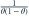

密度在  、 上分别为
、 上分别为  、
、 ，
， 。一个观测关于 的 Fisher 信息是？
。一个观测关于 的 Fisher 信息是？
、 上分别为 、，。一个观测关于 的 Fisher 信息是？- A
- B
- C
- D

我已思考，展开答案与解析
正确答案：D
- 得分在两个区间分别等于
 与 。
与 。 - 得分平方的期望为 。
易错提醒计算得分平方期望时必须乘上各区间的概率。
JYSG · 432精选 · 册内复旦大学432·2016年·八；信息量拆解；PDF第32页（印刷页30）
原题知识点延伸
、 上分别为 、，。一个观测关于 的 Fisher 信息是？
与 。JYSG · 432精选 · 册内复旦大学432·2016年·八；信息量拆解；PDF第32页（印刷页30）
原题知识点延伸